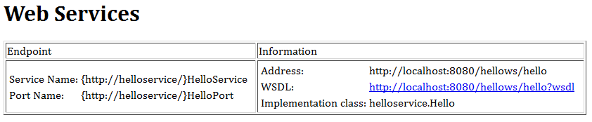

Java Server-Side Programming
Web Services
Develop and Deploy Web Services in Tomcat 6
We shall develop web services in JDK and deploy in Tomcat first, and using IDE tools such as Eclipse and NetBeans later.
Server-Side
Step 1: Implement the Web Service
Let us begin by writing a web service, using JAX-WS (Java API for XML - Web Services) provided in JDK 1.6. JAX-WS is the technology for building web services in Java.
- Write a web service end-point implementation (SEI) class called
Hello, in packagehelloservice. Save your source file as "helloservice\Hello.java". (You cannot use the default package for SEI.)package helloservice; import javax.jws.WebService; import javax.jws.WebMethod; /** * Web Service End-point implementation class */ @WebService public class Hello { // Constructor public void Hello() {} @WebMethod public String sayHello(String name) { return "Hello, " + name + "."; } @WebMethod public int addNumbers(int number1, int number2) { return number1 + number2; } @WebMethod public double divideNumbers(int dividend, int divisor) throws DivideNumbersException { if (divisor == 0) { throw new DivideNumbersException("Divisor cannot be zero!"); } return (double)dividend/divisor; } }
We also need to write the
DivideNumbersExceptionused in the above program:package helloservice; public class DivideNumbersException extends Exception { public DivideNumbersException(String message) { super(message); } }Explanation:
- The annotation
@WebServicespecifies that this class is meant as a web service. - Three methods are annotated with
@WebMethod. That is, these methods are accessible by the clients.
- The annotation
- Compile the source codes:
> cd package-base-directory > javac helloservice\*.java
- Use JDK's
wsgentool to generate all the portable artifacts needed for web service deployment and invocation, as follows:> cd package-base-directory > wsgen -classpath . -keep helloservice.Hello
The following classes will be generated in sub-directory
jaxws(more precisely, in packagehelloservice.jaxws). The "-keep" option keeps the generated source files.SayHello.class SayHelloResponse.class AddNumbers.class AddNumbersResponse.class DivideNumbers.class DivideNumbersExceptionBean.class DivideNumbersResponse.class
Observe that for each web method exposed, two classes were generated:
WebMethod.classandWebMethodResponse.class. An exception bean was further created for theDivideNumbersException.
Step 2: Download and install JAX-WS Runtime for Tomcat
- Download the JAX-WS Runtime from https://jax-ws.dev.java.net. From the "Downloads" link, choose the latest version.
- Download the binary. Unpack the binary by double clicking the downloaded jar file (or run the JDK's
jartool). - Copy all the jar files from the JAX-WS's "
lib" directory to Tomcat's "lib" directory (i.e., "$CATALINA_HOME\lib").
Step 3: Deploy the Web Service in Tomcat
- First, create a context (or web application) called
hellowsfor our web service in Tomcat, by creating a sub-directory calledhellowsunder$CATALINA_HOME\webapps. Also create a subdirectory "WEB-INF" and sub-sub-directory "WEB-INF\classes" under the context root directory. - Copy all the implementation and generated artifact classes (i.e., the directory
helloservice) into "WEB-INF\classes". (Alternatively, you could create and deploy as a single WAR (Web Archive) file). - Write the following web configuration file "
web.xml" and save it in "WEB-INF".<?xml version="1.0" encoding="UTF-8"?> <web-app xmlns="http://java.sun.com/xml/ns/javaee" xmlns:xsi="http://www.w3.org/2001/XMLSchema-instance" xsi:schemaLocation="http://java.sun.com/xml/ns/javaee http://java.sun.com/xml/ns/javaee/web-app_2_5.xsd" version="2.5"> <listener> <listener-class>com.sun.xml.ws.transport.http.servlet.WSServletContextListener</listener-class> </listener> <servlet> <servlet-name>HelloService</servlet-name> <servlet-class>com.sun.xml.ws.transport.http.servlet.WSServlet</servlet-class> <load-on-startup>1</load-on-startup> </servlet> <servlet-mapping> <servlet-name>HelloService</servlet-name> <url-pattern>/hello</url-pattern> </servlet-mapping> <session-config> <session-timeout>60</session-timeout> </session-config> </web-app> - Write the following configuration file for JAX-WS called "
sun-jaxws.xml" and save it in "WEB-INF" to define the end-points for the web service:<?xml version="1.0" encoding="UTF-8"?> <endpoints xmlns="http://java.sun.com/xml/ns/jax-ws/ri/runtime" version="2.0"> <endpoint name="HelloService" implementation="helloservice.Hello" url-pattern="/hello" /> </endpoints> - Start Tomcat. Observe these messages in Tomcat's console:
...... xxxxx com.sun.xml.ws.transport.http.servlet.WSServletContextListener contextInitialized INFO: WSSERVLET12: JAX-WS context listener initializing xxxxx com.sun.xml.ws.model.RuntimeModeler getRequestWrapperClass INFO: Dynamically creating request wrapper Class helloservice.jaxws.Hello xxxxx com.sun.xml.ws.model.RuntimeModeler getResponseWrapperClass INFO: Dynamically creating response wrapper bean Class helloservice.jaxws.HelloResponse xxxxx com.sun.xml.ws.transport.http.servlet.WSServletDelegate <init> INFO: WSSERVLET14: JAX-WS servlet initializing ......
- Issue the following URL (assuming that Tomcat is running in port 8080):
http://localhost:8080/hellows/hello
 - You could click on the WSDL (Web Service Description Language), to study the descriptions about this web service.
Client-Side
Now, a web service has been published. Let us write a client program (in Java) to access this web service.
- Write the following Java standalone program called
HelloClient:import javax.xml.ws.WebServiceRef; import helloservice.HelloService; import helloservice.Hello; public class HelloClient { @WebServiceRef(wsdlLocation="http://localhost:8080/hellows/hello?wsdl") static HelloService service = new HelloService(); //static HelloService service; public static void main(String[] args) { try { System.out.println("Retrieving the port from the following service: " + service); Hello port = service.getHelloPort(); System.out.println("Invoking the sayHello operation on the port."); String response = port.sayHello("World"); System.out.println(response); System.out.println("Invoking the addNumbers operation on the port."); int sum = port.addNumbers(55, 66); System.out.println(sum); System.out.println("Invoking the divideNumbers operation on the port."); double quotient = port.divideNumbers(1, 0); System.out.println(quotient); } catch(Exception e) { e.printStackTrace(); } } }Notice that this client program imports some classes from the web service. You cannot compile unless you get these classes.
- Use JDK's
wsimporttool to generate the client artifacts (i.e., the service endpoint interface and the service interface classes) (the "-keep" option keep the generated source files):wsimport -keep http://localhost:8080/hellows/hello?wsdl
Observe that these classes (in package
helloservice) are generated, in particular,HelloServiceandHelloclass which we used in our client program:AddNumbers.class AddNumbersResponse.class DivideNumbers.class DivideNumbersException.class DivideNumbersException_Exception.class DivideNumbersResponse.class Hello.class HelloResponse.class HelloService.class Hello_Type.class ObjectFactory.class package-info.class SayHello.class SayHelloResponse.class
- Compile and run the client program:
Retrieving the port from the following service: helloservice.HelloService@xxxxxx Invoking the sayHello operation on the port. Hello, World. Invoking the addNumbers operation on the port. 121 Invoking the divideNumbers operation on the port. helloservice.DivideNumbersException_Exception: Divisor cannot be zero!
REFERENCES & RESOURCES
- "The Java EE 5 Tutorial for Sun Java System Application Server 9.1" @ http://java.sun.com/javaee/5/docs/tutorial/doc.
Latest version tested: JDK 1.6, Tomcat 6.0.20, JAX-WS 2.1.7
Last modified: September 6, 2009